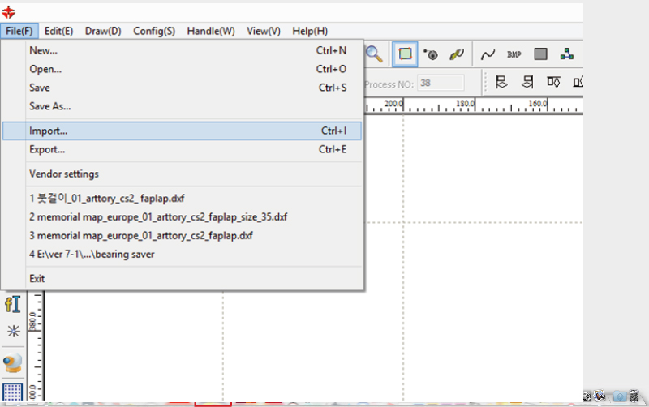
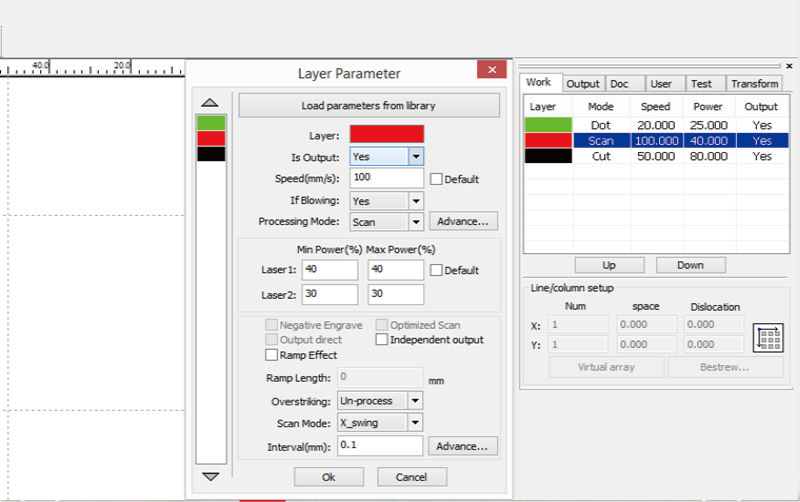
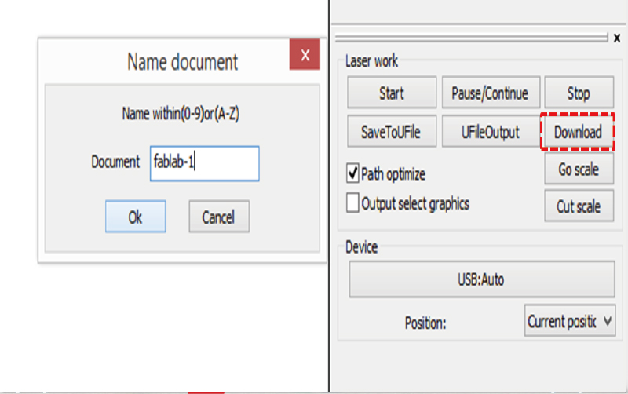
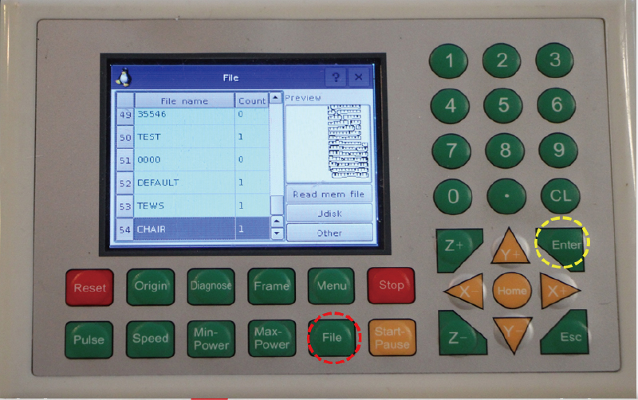
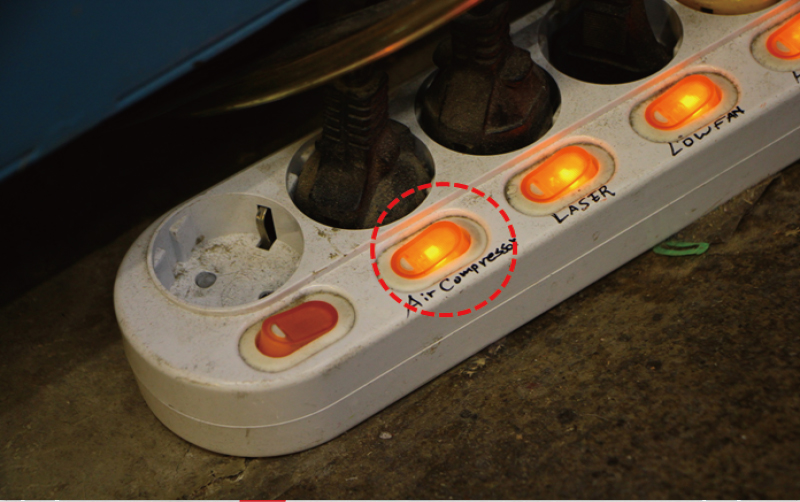
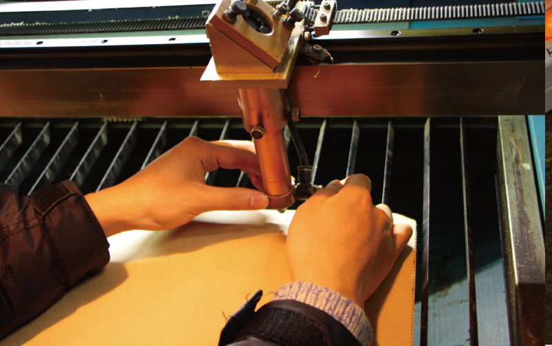
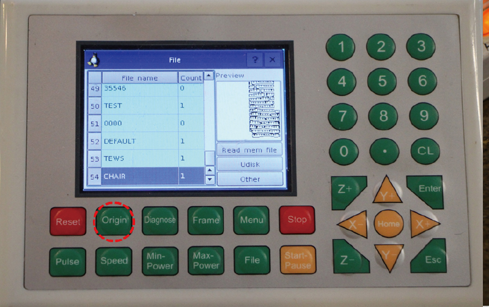
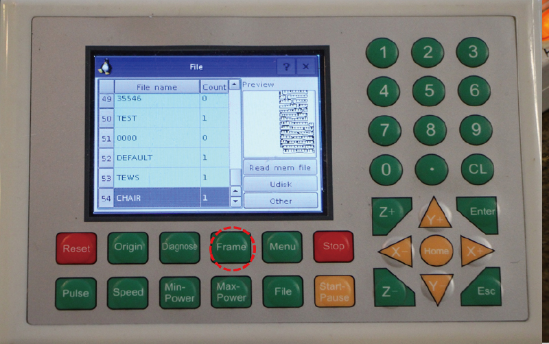
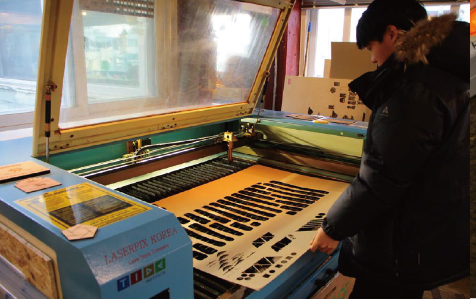

All content © 2016 Eduardo Chamorro (except where otherwise noted) Some rights reserved.
All content © 2016 Eduardo Chamorro (except where otherwise noted) Some rights reserved.Licensed under a Creative Commons Attribution-NonCommercial-ShareAlike 3.0 Unported License
Laserworks only accept DXF files,so save your design in this format in advance
Laserworks 프로그램을 실행시켜 미리 저장한 dxf.파일을 불러온다.[File-Import]

Set the layers by color and details on the design.(Speed, power,cut,scan,etc)
디자인의 세부사항과 레이어를 설정한다. (속도, 파워, 컷, 스캔 등)

Send the design to the lasercutter by pressing download file(write a name or overwrite default one)
디자인을 레이저커터로 전송한다.[Laser work-Download-Name 변경-ok]

Open the file on the lasercutter touchpad.(FILE/ select you file from the list/ENTER)
레이저 커터에서 전송한 파일을 불러온다.[File-저장파일 Enter]

After you verify that the air compressor and the rest of the multitab is turned on, introduce your material on the lasercutter bed.
레이저커터 오른쪽에서 에어컴프레서가 켜져 있는지 확인 한 후 재료를 넣는다.

Using the screws on the noozle adjust the height space between the noozle and the material manually by using the yellow spacer.
레이저 수평바를 사용하여 노즐 위의 나사를 풀어 레이저와 재료 사이의 거리를 수동으로 조절한다.

Locate the laser on the apropiate place on your material and press origin to setup the start point.
Origin을 눌러 레이저 시작점을 고정시킨다.

Check if you desing fits your material by pressing FRAME CHECK button.
Frame을 눌러 가공소재 위에 작업한 디자인의 위치와 크기가 적절한지 확인한다.

Press Start button to begin.
Start로 실행한다.
When the cut has finish wait until the smoke is taked out by the fumee extractor and clean the lasercutter bed.
작업이 끝나고 연기가 배출된 후에 완성품을 꺼낸다.
All content © 2016 Eduardo Chamorro (except where otherwise noted) Some rights reserved.